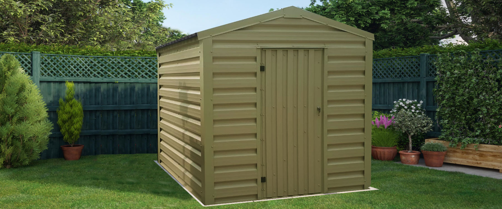

Rice-Fish-Mushroom Ecosystem
A value-addition model: Convert farm waste (straw) into super-food and fish feed.
1. Site Feasibility & Pre-requisites
🌾 Straw Availability
Primary Input.
Success depends on abundant rice straw availability. You need fresh straw from your own harvest
or neighbors to create mushroom substrate.
🌡️ Climate Control
Cool & Humid.
Mushrooms require high humidity (80-90%) and temperatures between 20-28°C. A shaded area near
the field is required for the shed.
🏗️ Infrastructure
Thatched Sheds.
You do not need heavy construction. Simple bamboo sheds with thatched roofs provide the perfect
ventilation for mushroom spawn running.
2. Infrastructure & Layout
The layout integrates a vertical component (mushrooms) with the horizontal wetland (rice/fish).
🚧 Construction Specs
- Mushroom Shed: Build near the pond dyke. Size: 5m x 10m for 500 bags.
- Pond: Standard fish pond design (min 1.5m deep).
- Sterilization Area: A designated spot for boiling/steaming rice straw before bagging.
3. The Nutrient Cycle
This model creates value from "waste". Rice straw is burned by many farmers; here, it becomes food.
Produces tons of straw
Grow on straw substrate
Waste after harvest
Eat compost as protein
4. Operational Calendar
Mushroom cycles are short (45 days), allowing 3 cycles per 1 rice season.
Collect fresh straw. Chop into 2-inch pieces. Soak in water and sterilize (boil/steam).
Layer straw and mushroom spawn (seeds) into plastic bags. Hang bags in the dark shed.
Pinheads appear. Harvest mature mushrooms daily for the next 15 days.
Bag Exhausted. The straw is now "Spent Mushroom Compost" (SMC). Dump this into the fish pond.
Fish consume the protein-rich compost. Leftover compost settles and fertilizes the pond bottom.
5. Risks & Solutions
⚠️ HYGIENE ALERT
Contamination is the enemy. Mushroom bags can easily get infected by green mold (Trichoderma). Always wash hands and sterilize straw properly.
| Problem | Solution |
|---|---|
| Green Mold in Bags | Remove infected bags immediately. Do not feed to fish. Burn/Bury. |
| Fish water too murky | Over-dumping of compost. Stop feeding for 3 days. |
6. Economics
💰 Cash Flow
- Rice: Income once every 4-5 months.
- Fish: Income once every 6-8 months.
- Mushrooms: Weekly Income. This provides daily cash for household expenses.
📈 Value Addition
- Straw Value: Increases from $0 (waste) to high value (substrate).
- Feed Savings: Reduced fish feed cost by 30% using spent compost.
- Dried Mushrooms: Unsold fresh mushrooms can be dried for long-term storage.